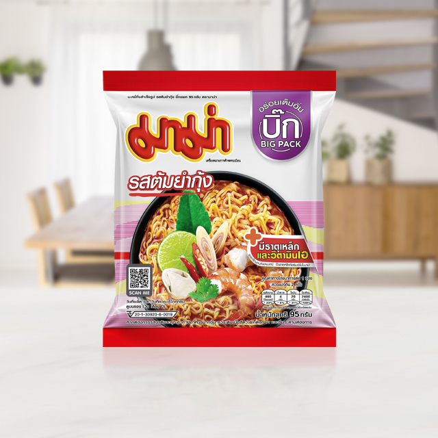

Shrimp Fried Rice

DESCRIPTION
Instant Noodle
is a type of food consisting of noodles sold in a precooked and dried
block with flavoring powder and/or seasoning oil. The dried noodle block
was originally created by flash frying cooked noodles, and this is still
the main method used in Asian countries; air-dried noodle blocks are
favored in Western countries. Dried noodle blocks are designed to be
cooked or soaked in boiling water before eating. Ramen, a Japanese
adaptation of Chinese noodle soup, is sometimes used as a descriptor for
instant noodle flavors by some Japanese manufacturers. It has become
synonymous in the United States for all instant noodle products.
INGREDIENTS
- 1 pack ramen noodles with flavor packet
- 1 large egg
- ½ teaspoon butter
- 2 slices American cheese
- ¼ teaspoon toasted sesame seeds
- ½ scallion, green part only, thinly sliced on the bias, optional
STEPS
-
Bring 2½ cups of water to a boil in a small saucepan. Add the noodles
and cook for 2 minutes. Add the flavor packet, stir, and continue to
cook for another 30 seconds.
-
Remove the pan from the heat and carefully add the egg. Do not stir;
pull the noodles over the egg and let sit for one minute to poach.
-
Carefully transfer everything to a serving bowl, add the butter, cheese
and sesame seeds and mix. Garnish with the scallions if desired.